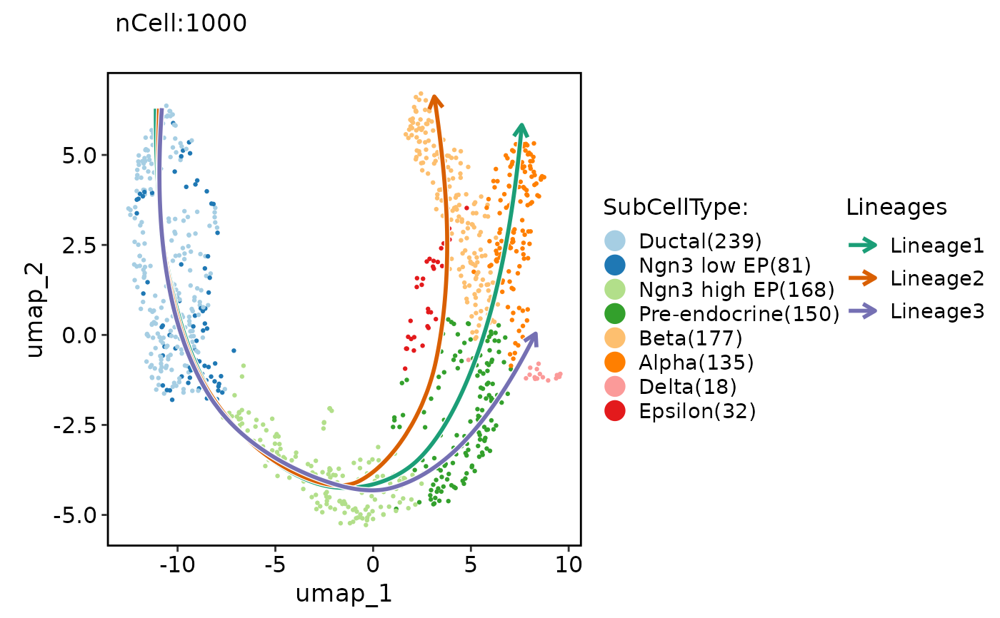

This function calculates gene-set scores from the specified database (db) for each lineage using the specified scoring method (score_method).
It then treats these scores as expression values and uses them as input to the RunDynamicFeatures function to identify dynamically enriched terms along the lineage.
Usage
RunDynamicEnrichment(
srt,
lineages,
score_method = "AUCell",
slot = "data",
assay = NULL,
min_expcells = 20,
r.sq = 0.2,
dev.expl = 0.2,
padjust = 0.05,
IDtype = "symbol",
species = "Homo_sapiens",
db = "GO_BP",
db_update = FALSE,
db_version = "latest",
convert_species = TRUE,
Ensembl_version = 103,
mirror = NULL,
TERM2GENE = NULL,
TERM2NAME = NULL,
minGSSize = 10,
maxGSSize = 500,
BPPARAM = BiocParallel::bpparam(),
seed = 11
)Arguments
- srt
A Seurat object containing the results of differential expression analysis (RunDEtest). If specified, the genes and groups will be extracted from the Seurat object automatically. If not specified, the
geneIDandgeneID_groupsarguments must be provided.- lineages
A character vector specifying the lineages to plot.
- score_method
The method to use for scoring. Can be "Seurat", "AUCell", or "UCell". Defaults to "Seurat".
- slot
A character vector specifying the slot in the Seurat object to use. Default is "counts".
- assay
A character vector specifying the assay in the Seurat object to use. Default is NULL.
- min_expcells
A numeric value specifying the minimum number of expected cells. Default is 20.
- r.sq
A numeric value specifying the R-squared threshold. Default is 0.2.
- dev.expl
A numeric value specifying the deviance explained threshold. Default is 0.2.
- padjust
A numeric value specifying the p-value adjustment threshold. Default is 0.05.
- IDtype
A character vector specifying the type of gene IDs in the
srtobject orgeneIDargument. This argument is used to convert the gene IDs to a different type ifIDtypeis different fromresult_IDtype.- species
A character vector specifying the species for which the analysis is performed.
- db
A character vector specifying the name of the database to be used for enrichment analysis.
- db_update
A logical value indicating whether the gene annotation databases should be forcefully updated. If set to FALSE, the function will attempt to load the cached databases instead. Default is FALSE.
- db_version
A character vector specifying the version of the database to be used. This argument is ignored if
db_updateisTRUE. Default is "latest".- convert_species
A logical value indicating whether to use a species-converted database when the annotation is missing for the specified species. The default value is TRUE.
- Ensembl_version
Ensembl database version. If NULL, use the current release version.
- mirror
Specify an Ensembl mirror to connect to. The valid options here are 'www', 'uswest', 'useast', 'asia'.
- TERM2GENE
A data frame specifying the gene-term mapping for a custom database. The first column should contain the term IDs, and the second column should contain the gene IDs.
- TERM2NAME
A data frame specifying the term-name mapping for a custom database. The first column should contain the term IDs, and the second column should contain the corresponding term names.
- minGSSize
A numeric value specifying the minimum size of a gene set to be considered in the enrichment analysis.
- maxGSSize
A numeric value specifying the maximum size of a gene set to be considered in the enrichment analysis.
- BPPARAM
A BiocParallelParam object specifying the parallel back-end to be used for parallel computation. Defaults to BiocParallel::bpparam().
- seed
The random seed for reproducibility. Defaults to 11.
Examples
data("pancreas_sub")
pancreas_sub <- RunSlingshot(pancreas_sub, group.by = "SubCellType", reduction = "UMAP")
#> Warning: Removed 8 rows containing missing values (`geom_path()`).
#> Warning: Removed 8 rows containing missing values (`geom_path()`).

pancreas_sub <- RunDynamicFeatures(pancreas_sub, lineages = "Lineage1", n_candidates = 200)
#> [2023-10-30 02:05:10.353965] Start RunDynamicFeatures
#> Workers: 1
#> Number of candidate features(union): 199
#> Calculate dynamic features for Lineage1...
#>
|
| | 0%
|
|==============================================================================================================| 100%
#>
#> [2023-10-30 02:05:28.673618] RunDynamicFeatures done
#> Elapsed time:18.32 secs
ht1 <- DynamicHeatmap(
srt = pancreas_sub,
lineages = "Lineage1",
cell_annotation = "SubCellType",
n_split = 4
)
#> 146 features from Lineage1 passed the threshold (exp_ncells>20 & r.sq>0.2 & dev.expl>0.2 & padjust<0.05):
#> Gcg,Iapp,Pyy,Chgb,Slc38a5,Rbp4,Lrpprc,Cck,2810417H13Rik,Chga...
#> 'magick' package is suggested to install to give better rasterization.
#>
#> Set `ht_opt$message = FALSE` to turn off this message.
#> The size of the heatmap is fixed because certain elements are not scalable.
#>
#> The width and height of the heatmap are determined by the size of the current viewport.
#>
#> If you want to have more control over the size, you can manually set the parameters 'width' and 'height'.
ht1$plot
 pancreas_sub <- RunDynamicEnrichment(
srt = pancreas_sub,
lineages = "Lineage1",
score_method = "AUCell",
db = "GO_BP",
species = "Mus_musculus"
)
#> [2023-10-30 02:05:32.843983] Start RunDynamicFeatures
#> Workers: 1
#> Species: Mus_musculus
#> Loading cached db: GO_BP version:3.17.0 nterm:16027 created:2023-10-30 01:40:02.863023
#> Convert ID types for the database: GO_BP
#> Connect to the Ensembl archives...
#> Using the 103 version of biomart...
#> Connecting to the biomart...
#> Searching the dataset mmusculus ...
#> Connecting to the dataset mmusculus_gene_ensembl ...
#> Converting the geneIDs...
#> Error in collect(., Inf): Failed to collect lazy table.
#> Caused by error in `db_collect()`:
#> ! Arguments in `...` must be used.
#> ✖ Problematic argument:
#> • ..1 = Inf
#> ℹ Did you misspell an argument name?
ht2 <- DynamicHeatmap(
srt = pancreas_sub,
assay = "GO_BP",
lineages = "Lineage1_GO_BP",
cell_annotation = "SubCellType",
n_split = 4,
split_method = "kmeans-peaktime"
)
#> Error in DynamicHeatmap(srt = pancreas_sub, assay = "GO_BP", lineages = "Lineage1_GO_BP", cell_annotation = "SubCellType", n_split = 4, split_method = "kmeans-peaktime"): lineages: Lineage1_GO_BP is not in the meta data of the Seurat object
ht2$plot
#> Error in eval(expr, envir, enclos): object 'ht2' not found
pancreas_sub <- RunDynamicEnrichment(
srt = pancreas_sub,
lineages = "Lineage1",
score_method = "AUCell",
db = "GO_BP",
species = "Mus_musculus"
)
#> [2023-10-30 02:05:32.843983] Start RunDynamicFeatures
#> Workers: 1
#> Species: Mus_musculus
#> Loading cached db: GO_BP version:3.17.0 nterm:16027 created:2023-10-30 01:40:02.863023
#> Convert ID types for the database: GO_BP
#> Connect to the Ensembl archives...
#> Using the 103 version of biomart...
#> Connecting to the biomart...
#> Searching the dataset mmusculus ...
#> Connecting to the dataset mmusculus_gene_ensembl ...
#> Converting the geneIDs...
#> Error in collect(., Inf): Failed to collect lazy table.
#> Caused by error in `db_collect()`:
#> ! Arguments in `...` must be used.
#> ✖ Problematic argument:
#> • ..1 = Inf
#> ℹ Did you misspell an argument name?
ht2 <- DynamicHeatmap(
srt = pancreas_sub,
assay = "GO_BP",
lineages = "Lineage1_GO_BP",
cell_annotation = "SubCellType",
n_split = 4,
split_method = "kmeans-peaktime"
)
#> Error in DynamicHeatmap(srt = pancreas_sub, assay = "GO_BP", lineages = "Lineage1_GO_BP", cell_annotation = "SubCellType", n_split = 4, split_method = "kmeans-peaktime"): lineages: Lineage1_GO_BP is not in the meta data of the Seurat object
ht2$plot
#> Error in eval(expr, envir, enclos): object 'ht2' not found